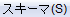
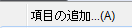
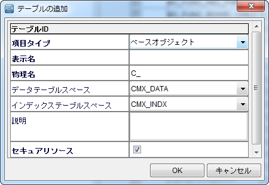
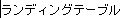

# -*- coding: utf-8 -*-
import sys
reload(sys)
sys.setdefaultencoding('utf-8')
# CSVファイルのインポート(
import csv
FILENAME = "C:\Program Files\SikuliX\LDG_data.csv"
f = open(FILENAME,"r")
reader = csv.reader(f)
CSVLDGLIST = []
for i in reader:
CSVLDGLIST.append(i)
else:
for LDNAM, LDEXP in CSVLDGLIST:
# BOスキーマ作成
click()
click()
wait(, 15)
click()
click()
type(Key.TAB)
paste(LDNAM) # BO表示名入力
type(Key.TAB)
type(Key.TAB)
type(Key.TAB)
type(Key.TAB)
paste(unicode(LDEXP,"cp932")) # BO説明を入力
click( )
wait(20)
#wait("2016-03-16_151622.png",180)
else:
popup("ALL LDG setup finish")
)
wait(20)
#wait("2016-03-16_151622.png",180)
else:
popup("ALL LDG setup finish")